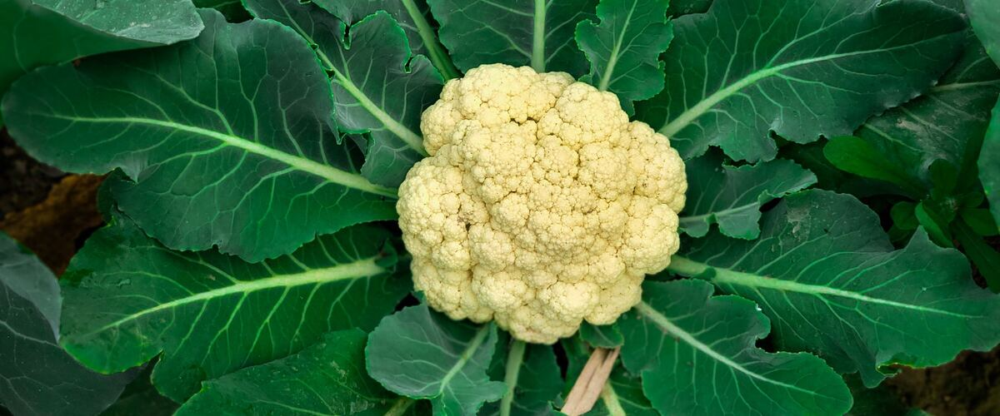

When to plant cauliflower in Hood River, OR
Start cauliflower from seed indoors Feb 11–25, then plant the young plants in the garden in Hood River Apr 1–29. For a fall harvest, plant again Jul 14–28.
- Difficulty
- Tricky here
- Sun
- Full sun
- Spacing
- 18 to 24 inches apart
- Planting depth
- Plant starts at the depth they grew in the pot
- Frost
- Handles light frost
- First harvest
- About 75 days after planting
Why these dates
Hood River's typical last spring frost is April 20. As a cool-season crop that handles light frost, this crop doesn't need to wait for that date. In the Columbia Basin and low eastern valleys, though, the soil usually isn't ready to work until about April 1.
Columbia Basin and low eastern valleys. Hot, dry summers and quick spring warm-up. Warm crops go in earlier than west of the Cascades, and irrigation matters more than rain.
How to grow cauliflower in Hood River
- Start seeds indoors Feb 11–25 in trays or small pots under a grow light or in your sunniest window. Or skip this step and buy young plants (starts) at a garden center.
- Harden off the young plants: about a week before planting, set them outside for a few hours a day, a little longer each day.
- Plant them in the garden Apr 1–29, 18 to 24 inches apart. Plant starts at the depth they grew in the pot.
- Water deeply once or twice a week rather than a little every day, and mulch once the soil is warm.
- Plant again Jul 14–28 for a fall harvest.
- Harvest: Cut the head while it's firm and tight, before the curds start to separate. Tie the outer leaves over young heads to keep them white.
Key numbers
- Soil 50°F or warmerPlant out
- 6.0–7.0Soil pH
- 1–1.5 inches a week, evenlyWater
- Button headsBiggest risk
Growing notes
What makes the difference in Northwest gardens, in plain language.
Soil and feeding
Cauliflower needs rich, moisture-holding soil with plenty of compost and a pH of about 6.0 to 7.0. It is sensitive to a shortage of boron, a trace nutrient, which can cause hollow stems and brown heads; a good compost or a complete vegetable fertilizer usually covers it. Side-dress with nitrogen about a month after planting. Above all, keep growth steady. Cauliflower has little tolerance for a check in growth, so water evenly and mulch once the soil is warm.
Why cauliflower makes tiny heads
If young plants are stressed by cold, drought, crowding or being root-bound, they can form a small "button" head early instead of a full one. That's why the guide warns against rushing spring planting. Set out young, healthy starts after the worst cold has passed, and don't let them dry out. In the Northwest, fall crops planted in mid-summer are often the most reliable, because heads form in cool, even weather. East of the Cascades, hot early summer weather can also cause loose, ricey heads, which is another reason fall crops shine there.
Blanching, harvest and storage
Sunlight turns white heads yellowish and stronger tasting. When the head is about the size of an egg, pull the outer leaves over it and tie them loosely, or snap a few leaves over the top. Purple types like Graffiti don't need this. Check under the leaves every few days, since heads go from ready to overripe quickly. Cut while the curds are tight and smooth. Cauliflower keeps about a week in the fridge, and blanched florets freeze well.
Common questions
When is the last frost in Hood River, OR?
Typically April 20. In 9 years out of 10, frost is over by May 9. These are 1991–2020 NOAA climate normals for Hood River.
Is it too late to plant cauliflower in Hood River?
The spring planting window runs through April 29. If you miss it, plant again for fall from July 14 to July 28.
When should I start cauliflower from seed indoors in Hood River?
February 11 to February 25, which is 7 to 5 weeks before the April 1 planting date. Or buy young plants at a garden center instead.
Why is my cauliflower head so small?
Stress early in life, from cold snaps, dry soil, or pot-bound transplants, makes plants form small button heads. Plant young starts, keep the soil evenly moist and feed well. Fall crops usually do better in the Northwest.
Why is my cauliflower turning yellow or purple?
Sun exposure discolors white heads. Tie the outer leaves over the head when it's small to keep it pale. The color change is harmless, though the flavor gets a bit stronger.
When should I plant fall cauliflower?
Set out starts in mid-summer so heads form in the cool weather of fall. Keep young plants well watered through late summer heat. Check the planting calendar for your area's dates.
Also plant in Hood River around the same time
Planting dates for cauliflower in nearby areas
- Baker City, OR Apr 27 – May 25
- Pendleton, OR Apr 1–29
- The Dalles, OR Apr 1–29
- Hermiston, OR Apr 1–29
- Ontario, OR Apr 1–29
- La Grande, OR Apr 15 – May 13
Full planting calendar for Hood River · Cauliflower in every city